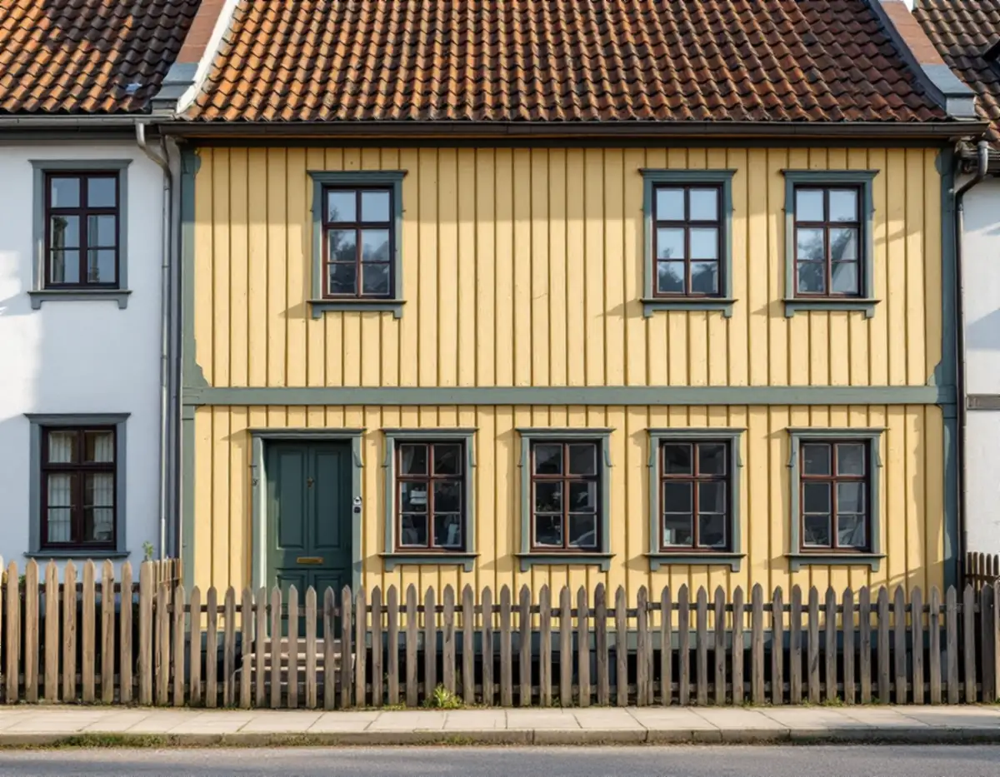
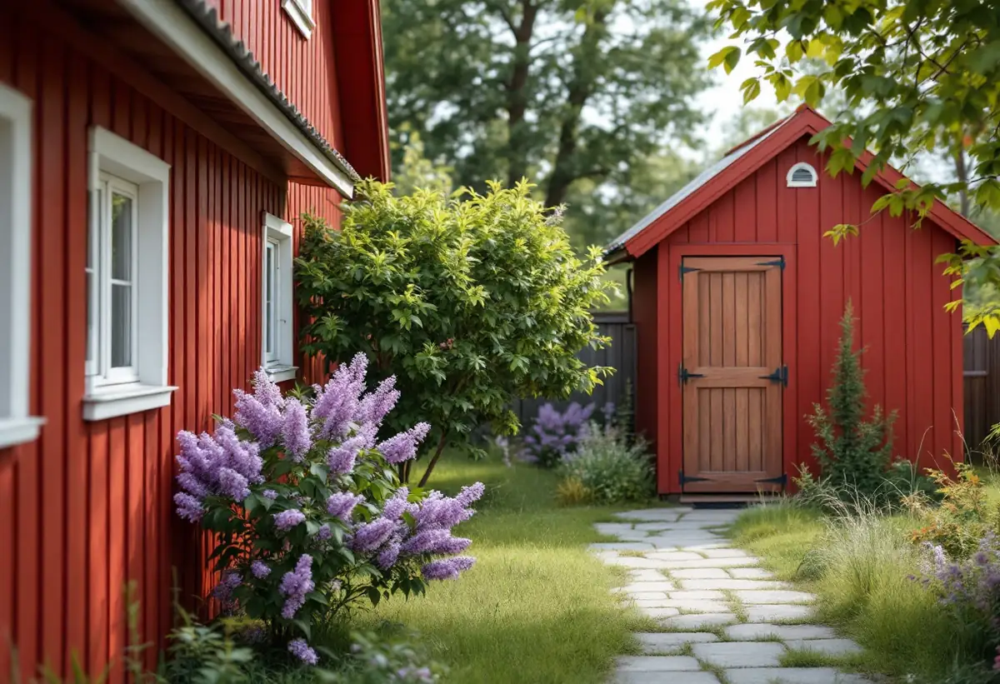
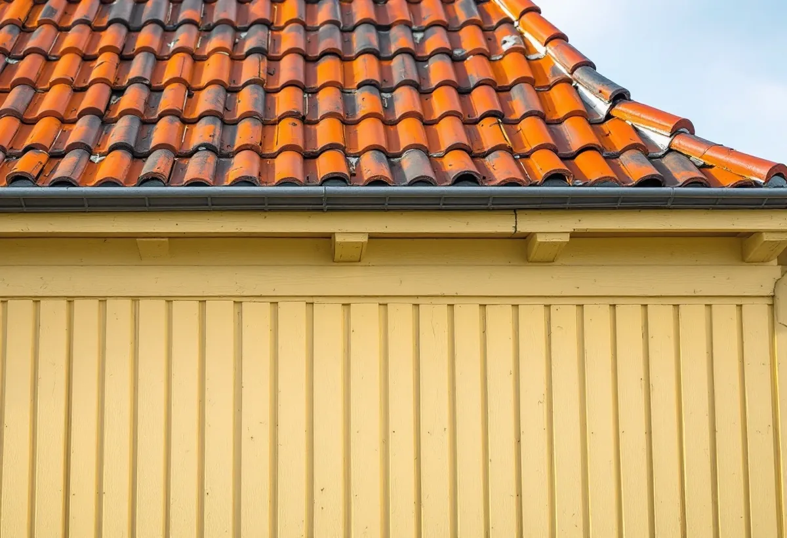

Platsbesök
Vi går runt huset och skiljer på gatufasad, gårdsfasad och uthus.
I Sigtunas gamla stadskärna har många hus två sidor som målades på olika sätt: en finare fasad mot gatan och en enklare mot gården. Geal Entreprenad AB målar om fasader, gavlar och uthus i Sigtuna och utgår från vad som redan sitter på varje vägg innan färgtyp och kulör bestäms.

Bevarande- och förnyelseplanen för Sigtuna stad beskriver hur stadens fasader har färgsatts, och den gör en tydlig skillnad mellan husets sidor. Den fina oljemålade panelen var som regel förbehållen gatufasaden och de gavlar som syntes. Många gårdsfasader förblev, liksom uthusen, rödfärgade långt in i sen tid. Planens färgundersökning handlar därför främst om fasaden mot gatan, och de hus som fortfarande är rödfärgade har inte undersökts, eftersom de inte har haft någon oljefärg att ta prov på.
Ett och samma hus kan alltså bära två färgtyper som sköts olika. Enligt Riksantikvarieämbetets handbok om byggnadsmåleri ska linoljefärg strykas tunt, hellre i flera tunna lager än i få tjocka, medan röd slamfärg är matt, vattenspädbar och släpper igenom fukt. Slamfärgen fäster bra på ohyvlat virke men sämre på hyvlat. Vid platsbesöket går vi därför runt hela huset och bedömer gatusidan, gårdssidan och uthusen var för sig.

Enligt planen hängde förekomsten av oljemålad panel och en del av skillnaderna i kulörval ihop med byggnadens status, som ägare, storlek, användning och läge. Det fanns till exempel en skillnad mellan norra och södra sidan av Stora gatans centrala del. De enklare husen söder om gatan och på Malmen tog över de finare husens färgsättning först efter 10–20 år. Undersökningens indelning i skeden tycks dessutom följa den naturliga ommålningscykeln på ungefär 20 år.
Under 1880- och 1890-talen var det lika vanligt att fasad och knutar hade samma färg som att knutarna avvek, och fönstren var ofta mörkbruna oavsett fasadfärg. Länsstyrelsernas blad om målning utomhus på trä ger en äldre bakgrund: inklädda knutar och lister målades grå med oljefärg för att likna sandsten, och panelklädda fasader oljemålades för att likna sten eller puts. Vilken lösning som hör till just ditt hus visar de gamla färglagren, och därför skrapar vi fram dem innan vi föreslår något.
Planens underlag bygger på provtagningar på ett tjugotal bevarade fasader, uppgifter i brandförsäkringar och äldre målningar. För flera fastigheter anges kulörerna med NCS-koder. Gamla tvåan (Humlegården 13) är avfärgad med röd slamfärg på fasaderna, ockra på fönsterspröjsen och grön umbra eller grönjord på fönsterfodren. Malmgårdens gula fasad anges som 2030-Y30R och de grågröna listverken som 4005-G50Y, samma färgsättning som Geijersgården i Uppsala.
Planen skriver samtidigt att NCS-beteckningarna är ungefärliga och att färgåtergivningen kan vara missvisande. Vi använder därför koderna som ett första förslag och jämför dem med lagren som kommer fram på ditt hus. På gårdssidan är det rödfärgen som ska stämma. Riksantikvarieämbetet påpekar att kulören kan skilja något mellan tillverkare, och att en slamfärgad yta bara ska målas om med slamfärg. När bara en del av en gårdsfasad bättras väljer vi därför samma färg som sitter där.
När ställningen ändå står uppe är det lätt att vilja byta detaljer. Planen skriver att den enkla bebyggelsen från början inte hade några plåtdetaljer, att plåttäckning blev vanligare i slutet av 1800-talet och att plåtklädda vindskivor är en modern företeelse. Vid byte av plåt bör det äldre utseendet vara förebild. Riktigt gammal träpanel kallas en sällsynthet som bör värnas, och eftersom gamla panelbrädor ofta har olika bredd bör den variationen finnas kvar när bräder byts. Vi målar därför vindskivorna i trä i stället för att klä in dem, och lagade partier får bräder i samma bredd som grannbrädorna.
Kommunens sida om att bygga i kulturmiljö skriver att bygglov kan behövas även för åtgärder som annars är lovbefriade, till exempel fasadändring, om byggnaden eller området är särskilt värdefullt. Är du osäker kan du skicka foton på huset från alla väderstreck, så gör kommunen en bedömning. Om kulörbyte i stadskärnan och färgskalorna epok för epok kan du läsa under målare i Sigtuna, om puts och sockel under fasadrenovering i Sigtuna och om målning i stort på sidan om målare.

Vi går runt huset och skiljer på gatufasad, gårdsfasad och uthus.
Små ytor skrapas fram för att se färgtyp och äldre kulörer.
Varje sida och färgtyp står för sig, så att du ser vad som ingår.
Oljefärgen tvättas och skrapas, rödfärgen borstas fri från lös färg.
Linoljefärg i tunna lager och slamfärg i en strykning vid ommålning.
Vi går igenom resultatet och skriver ner vilka kulörer som har använts.
Skatteverket räknar målning av fasader i ett småhus som rotarbete, liksom att montera och montera ner byggnadsställningen. Komplementhus som förråd och andra mindre byggnader kan höra till småhuset, men målning av staket och murar ger inget avdrag.
Avdraget är högst 30 procent av arbetskostnaden, högst 50 000 kr per person och år och högst 75 000 kr tillsammans med rutavdrag. Färg, material och resor ger inget avdrag. Du ska äga huset medan arbetet utförs. Geal drar avdraget direkt på fakturan.
Hur många sidor och byggnader som ska målas, om gatufasad och gårdssida har olika färgtyp, hur många knutar, foder och listverk som får egen kulör och hur mycket panel som behöver lagas väger tyngst. Efter ett gratis platsbesök får du ett skriftligt kostnadsförslag.
Fasad, fönster och invändig målning.
Målare i Stockholm →Takbyte, takbesiktning och plåtarbeten.
Takläggare i Sigtuna →Sigtuna stad, Märsta och Arlanda.
Takrenovering i Sigtuna →Potten, Arlanda och gårdshusen.
Attefallshus i Sigtuna →Anmälan, fläkt och dusch i stället för badkar.
Badrumsrenovering i Sigtuna →Nytt hus, gästhus och större tomt.
Byggföretag i Sigtuna →Puts i stadskärnan, panel i dalgången.
Fasadrenovering i Sigtuna →Arlanda, ljudisolering och fönster i Sigtuna.
Fönsterbyte i Sigtuna →Bevarandeplanen, gammalt glas och fönsterkulörer.
Fönsterrenovering i Sigtuna →Golv på platta, fuktmätning och radon.
Golvläggare i Sigtuna →Plankgolv i äldre trähus.
Golvslipning i Sigtuna →Ventilation, avlopp och anmälan.
Köksrenovering i Sigtuna →Stadskärnan, Märsta och Rosersberg.
Målare i Sigtuna →Plåttak, rännor och beslag i Sigtuna.
Plåtslagare i Sigtuna →Staket, dörrar och gårdshus i stad och dalgång.
Snickare i Sigtuna →Lov, checklista och gårdarnas tegel.
Takbyte i Sigtuna →Ny tapet i äldre trähus.
Tapetsering i Sigtuna →Arlanda, uterum och handlingarna.
Tillbyggnad i Sigtuna →Ventilation, VA och kulturmiljö.
Totalrenovering i Sigtuna →